Above else, show the data. Maximize the data-ink ratio.
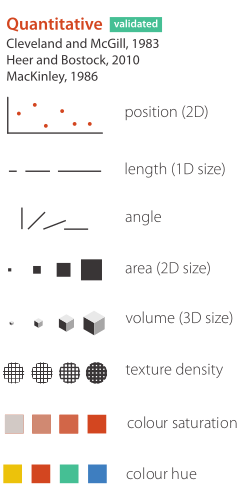
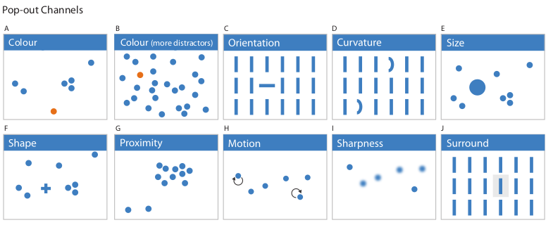
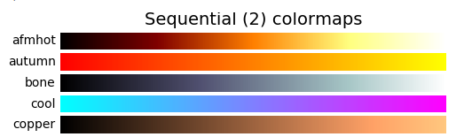
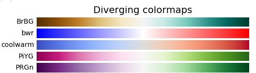
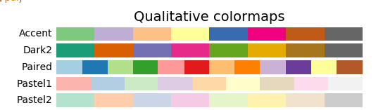
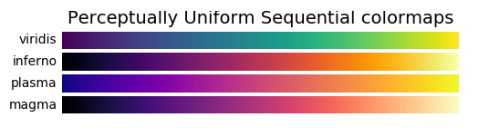
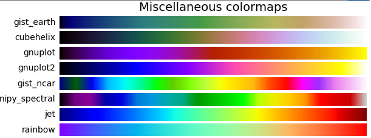
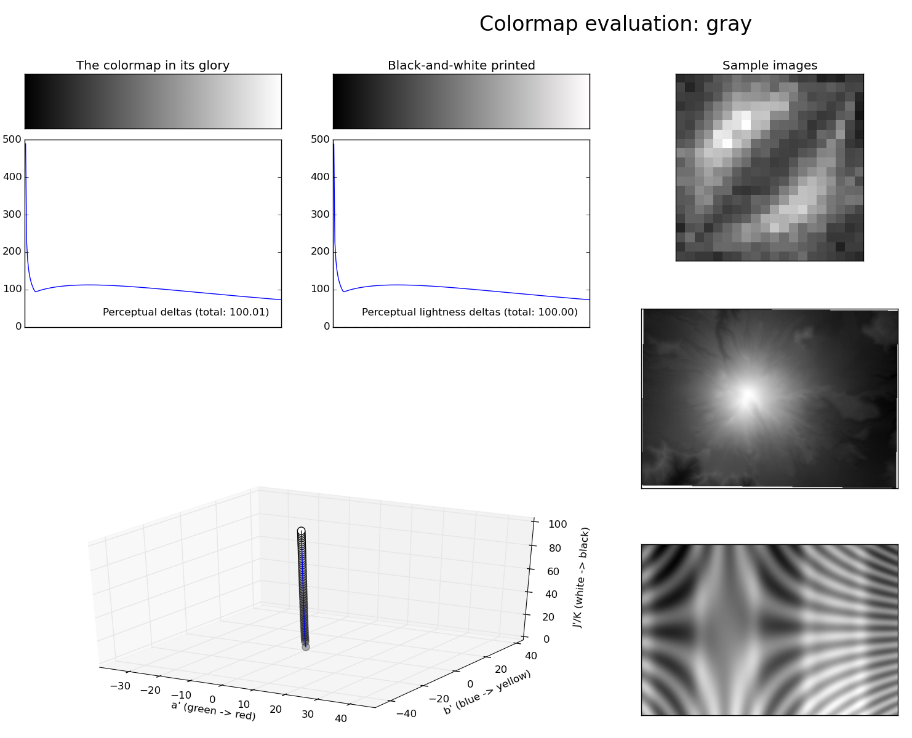
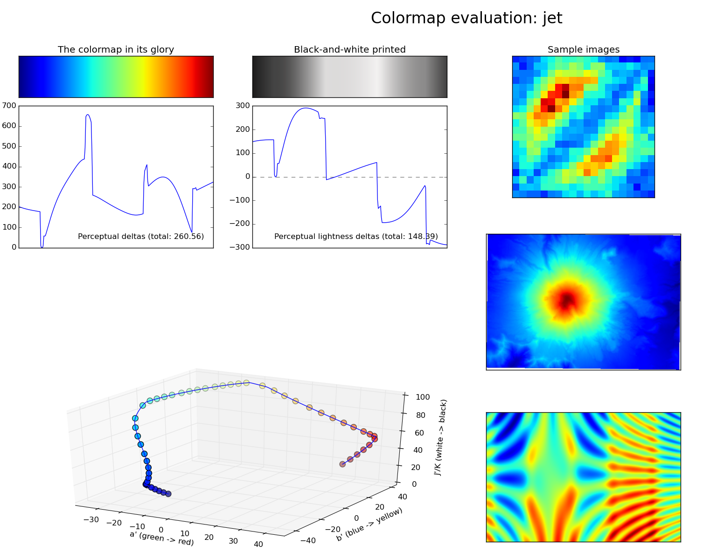
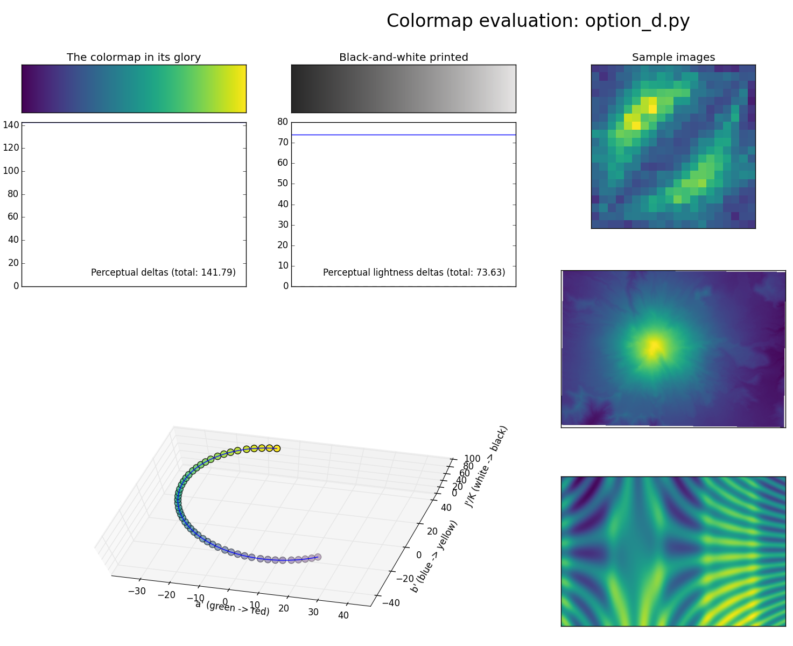
R plotting library
%matplotlib inline
%matplotlib notebook
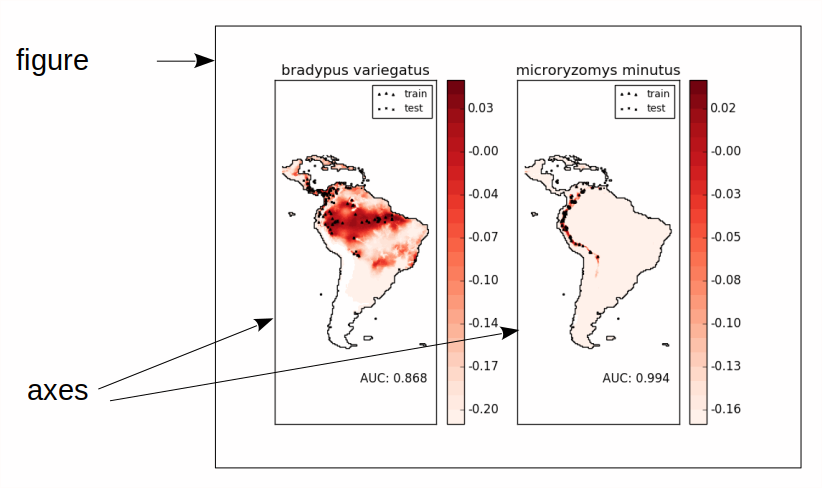
fig = plt.figure()
fig, ax = plt.subplots(n, m)
import matplotlib.pyplot as plt
# ax = plt.subplot(n, m, i)
# places ax at position i in n x m grid
# (1-based index)
ax11 = plt.subplot(2, 2, 1)
ax21 = plt.subplot(2, 2, 2)
ax12 = plt.subplot(2, 2, 3)
ax22 = plt.subplot(2, 2, 4)
# OR:
# fig, axes = plt.subplots(2, 2)
# ax11, ax21, ax12, ax22 = axes.ravel()
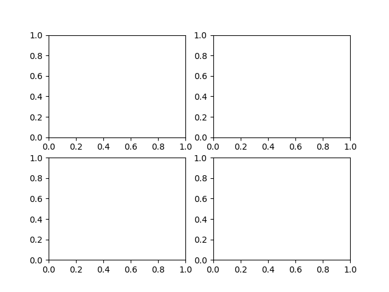
import matplotlib.pyplot as plt
# ax = plt.subplot(n, m, i)
# places ax at position i in n x m grid
# (1-based index)
ax11 = plt.subplot(2, 2, 1)
ax21 = plt.subplot(2, 2, 2)
ax2 = plt.subplot(2, 1, 2)
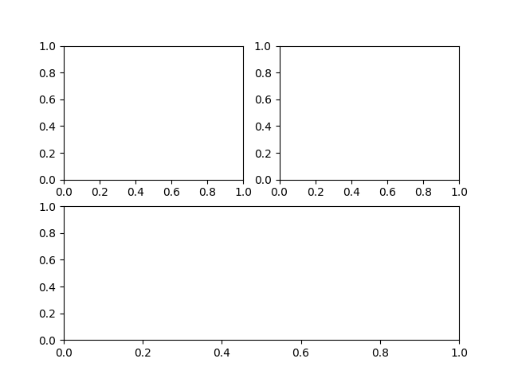
sin = np.sin(np.linspace(-4, 4, 100))
plt.subplot(2, 2, 1)
plt.plot(sin)
plt.subplot(2, 2, 2)
plt.plot(sin, c='r')
fig, axes = plt.subplots(2, 2)
axes[0, 0].plot(sin)
axes[0, 1].plot(sin, c='r')
plt.title
plt.xlim, plt.ylim
plt.xlabel, plt.ylabel
plt.xticks, plt.yticks
ax = plt.gca() # get current axes
fig = plt.gcf() # get current figure
ax.set_title
ax.set_xlim, ax.set_ylim
ax.set_xlabel, ax.set_ylabel
ax.set_xticks, ax.set_yticks (& ax.set_xtick_labels)
import matplotlib.pyplot as plt
import numpy as np
data = np.sin(np.linspace(-4,4,100))
fig, ax = plt.subplots(2, 4, figsize=(10,5))
ax[0,0].plot(data)
ax[0,1].plot(range(100), data) # same as above
ax[0,2].plot(np.linspace(-4,4,100),data)
ax[0,3].plot(data[::10], 'o')
ax[1,0].plot(data, c='r')
ax[1,1].plot(data, '--')
ax[1,2].plot(data, lw=3)
ax[1,3].plot(data[::10], '--o')
plt.tight_layout() # makes stuff fit - usually works
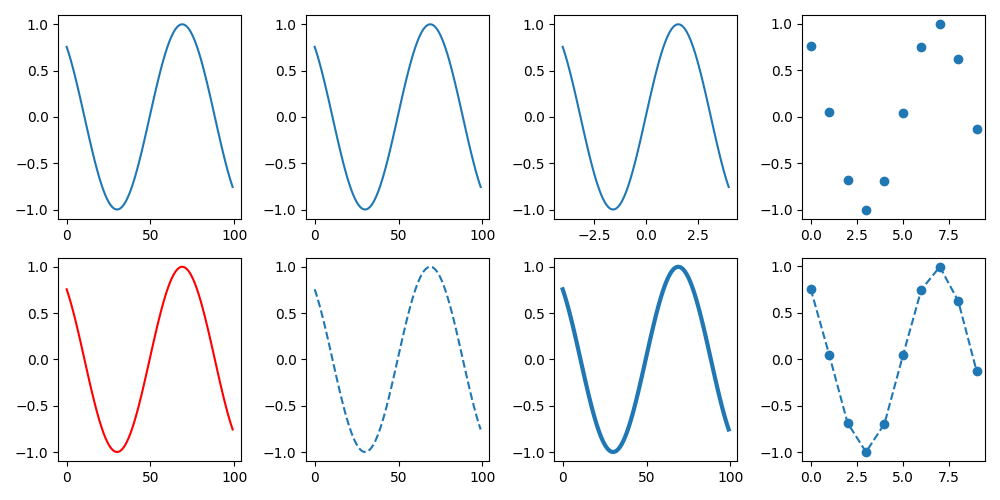
x = np.random.uniform(size=50)
y = x + np.random.normal(0, .1, size=50) # add noise
fig, ax = plt.subplots(2, 2, figsize=(5,5),
subplot_kw={'xticks': (), 'yticks': ()})
ax[0,0].scatter(x,y)
ax[0,0].set_title("scatter")
ax[0,1].plot(x,y,'o')
ax[0,1].set_title("plot")
ax[1,0].scatter(x,y, c=x-y, cmap='bwr', edgecolor='k')
ax[1,1].scatter(x,y, c=x-y, s=np.abs(np.random.normal(scale=20, size=50)),
cmap='bwr', edgecolor='k')
plt.tight_layout()
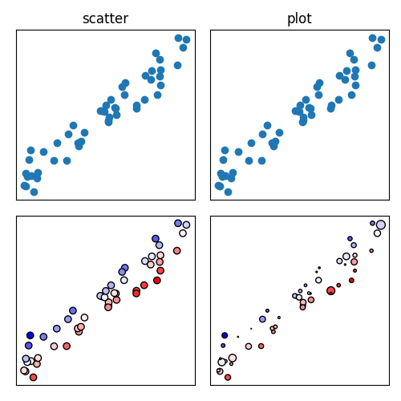
fig, ax = plt.subplots(1, 3, figsize=(10,3))
ax[0].hist(np.random.normal(size=1000))
ax[1].hist(np.random.normal(size=1000), bins=100)
ax[2].hist(np.random.normal(size=1000), bins="auto")
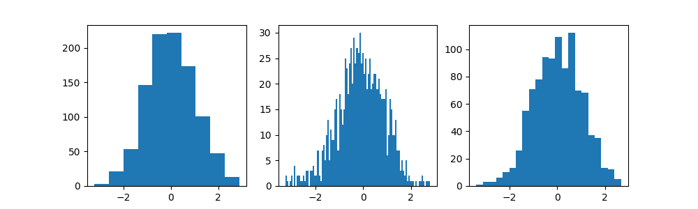
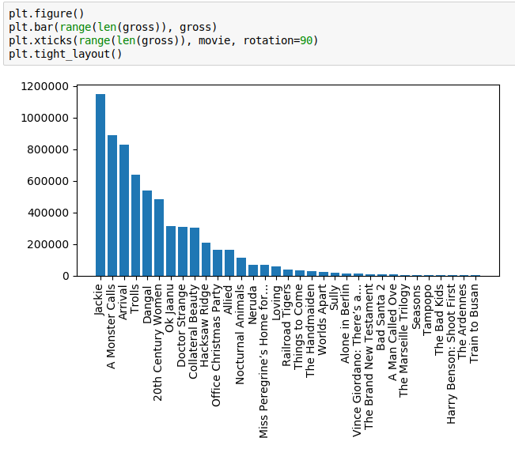
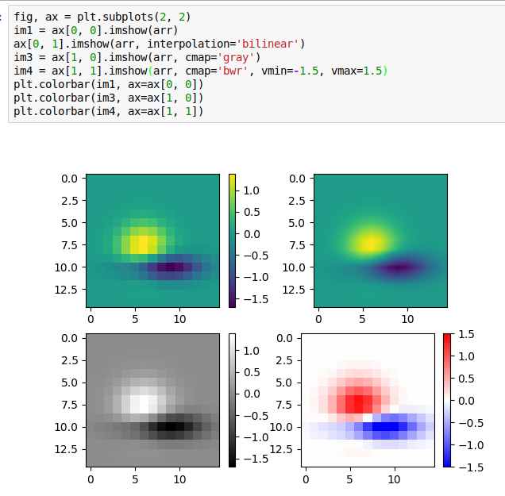
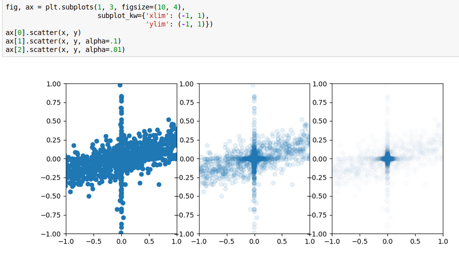
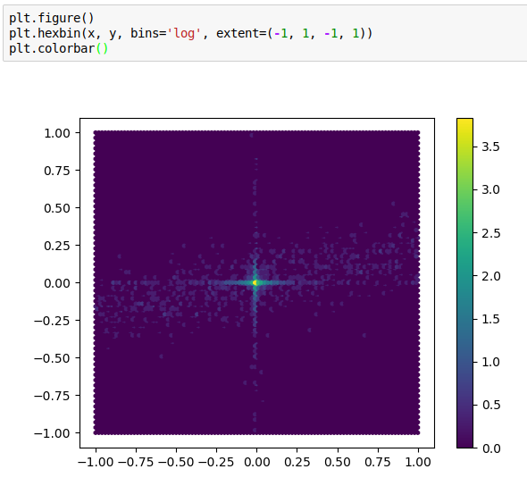
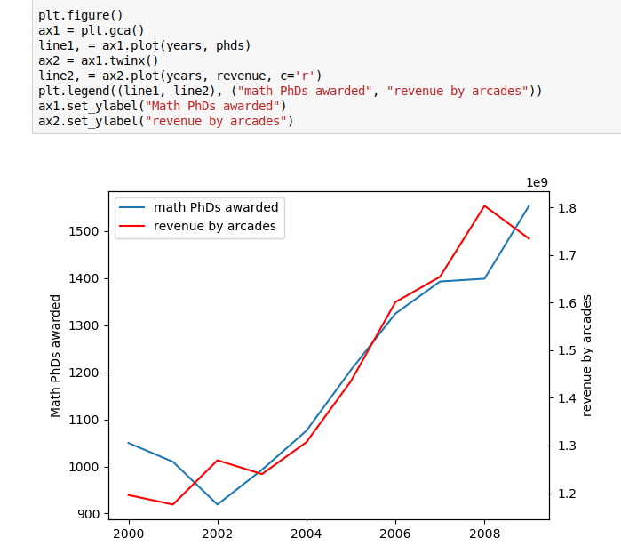
Gallery: http://matplotlib.org/gallery.html
Plotting commands summary: http://matplotlib.org/api/pyplot_summary.html